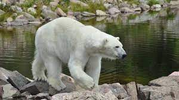

El lloc mes bonic de NORUEGA
FIORDO DE GEIRANGE Noruega está llena de fiordos pero, para muchos, el de Geiranger es el más bonito. El fiordo de Geiranger es un un brazo de 15 km del Storfjord y recientemente ha sido declarado Patrimonio de la Humanidad por la UNESCO por su indiscutible belleza.
Fauna Noruega
Los mamíferos más destacados de Noruega son el alce, el ciervo y el corzo. Encontramos igualmente linces, martas, zorros y armiños. Mención especial son las especies árticas que encontramos en Svalvard, con el impresionante oso polar como animal más destacado. Allí también habitan zorros árticos y renos. 
I comer la comida tipica Noruega como: